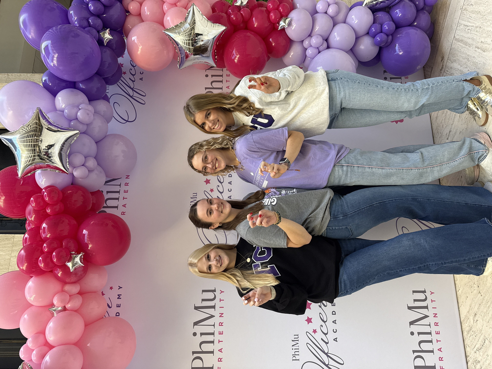

Phi Mu
Membership Director
Through Phi Mu, I’ve gained experience in leadership, recruitment, communication, event planning, and building relationships across the chapter and campus community.

I’m AJ Morris, a junior at Texas Christian University studying Strategic Communication and Digital Culture & Data Analytics. Originally from Los Angeles, California, I’ve always been drawn to the way storytelling, sports, media, and strong ideas can bring people together.
At TCU, I’ve been able to explore those interests through leadership, creative projects, campus involvement, and professional experience. I enjoy learning by doing, whether that means building a website, creating content, working with organizations, or taking on a new leadership challenge.
Looking ahead, I hope to build a career in sports media, marketing, brand strategy, or digital storytelling while continuing to grow as a communicator and creative thinker.
My time at TCU has given me opportunities to lead, create, connect, and get involved in communities that matter to me.
Membership Director
Through Phi Mu, I’ve gained experience in leadership, recruitment, communication, event planning, and building relationships across the chapter and campus community.
Campus Manager
I work with student organizations to turn ideas into custom apparel while building experience in outreach, sales, client communication, and project management.
Student Involvement
Frog Army combines my love of sports and community by helping build student excitement and support around TCU women’s basketball.
Want to learn more about my experience, leadership, education, and skills? Take a look at my full resume.
View My Resume